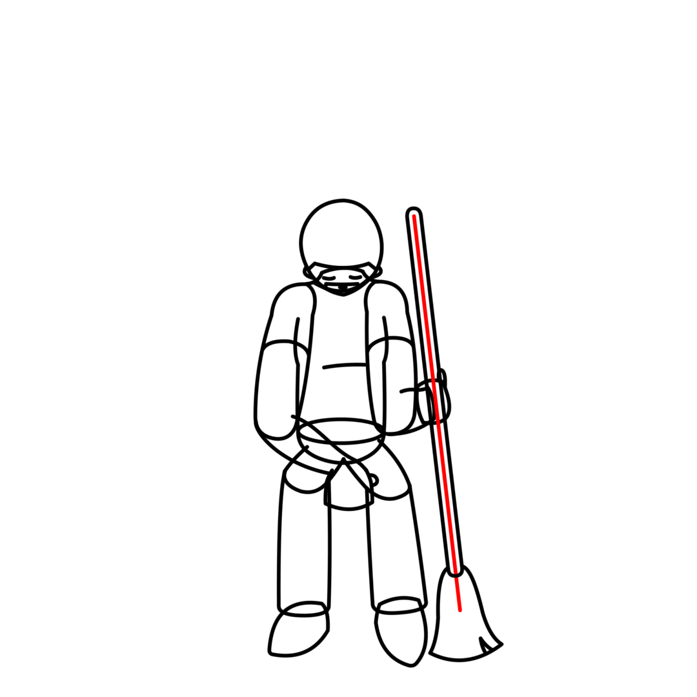
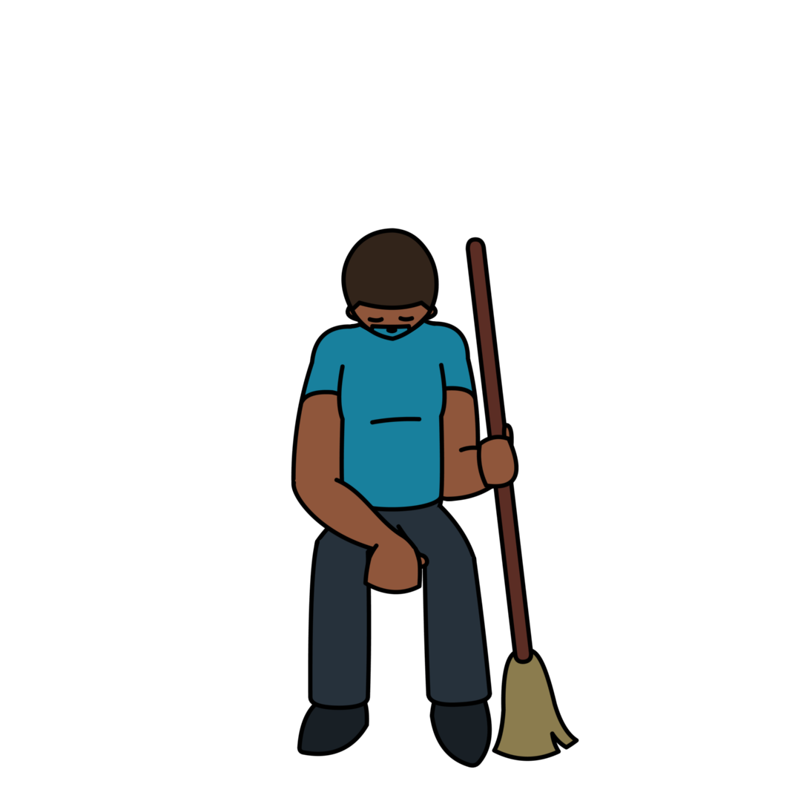
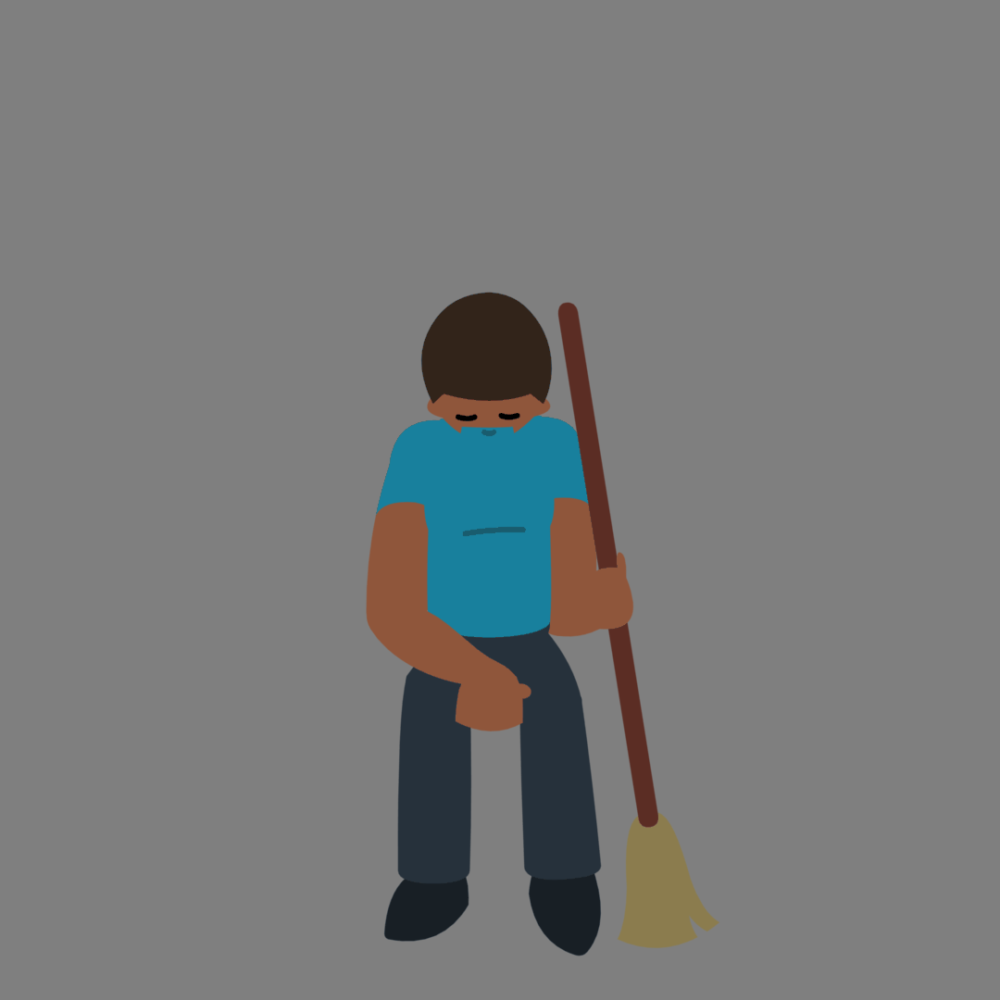
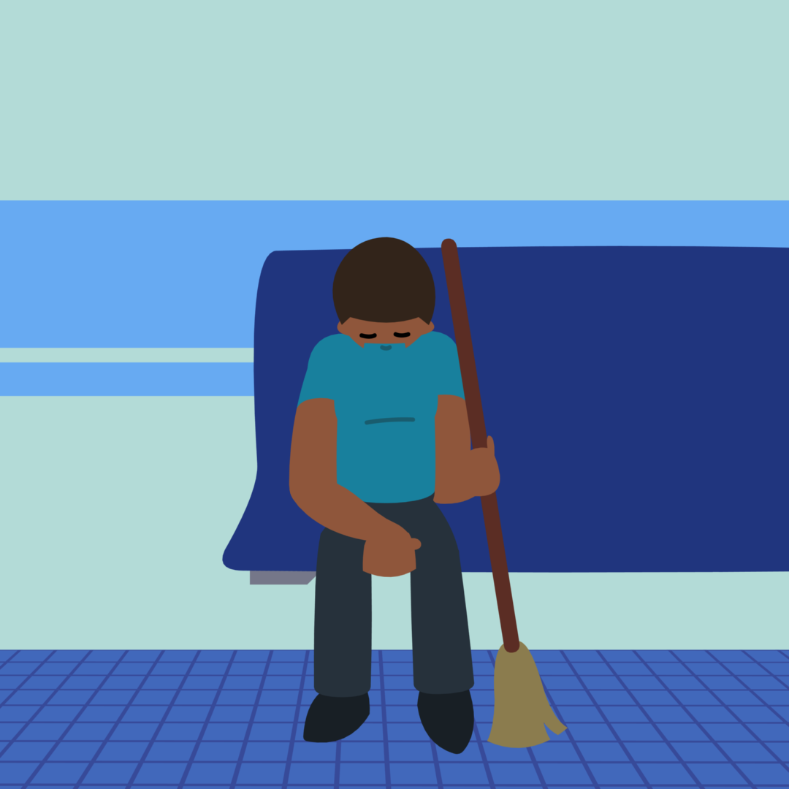

Pencil Drawing
I start with a pencil drawing. One day, my tablet will stop collecting dust in the drawer and actually be used.
Line Art
I trace the drawing using vector tools to make line art.
Color Art
I color in the line art. I took the colors straight from Janitor's in-game sprite, but it will be fine because I will do color adjustments later.
Animation Time
Janitor is asleep, so there is less movement than I usually make. he is tired
Background
I based the background on Middlesea Hospital. I am bad at perspective, so for the floor, I made a normal square grid and reshaped it with Toon Boom's Quadmap node.
Shadows and Light
I darkened the background to show that it is night, but I added a spotlight for Janitor, mimicking the spotlight that sometimes happens in Rhythm Doctor.

Finalizing
It looked a little bland, so I added two little stars and a shaking camera. Rest easy, Janitor.